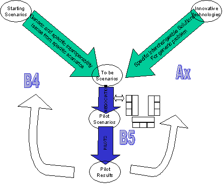
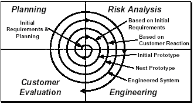
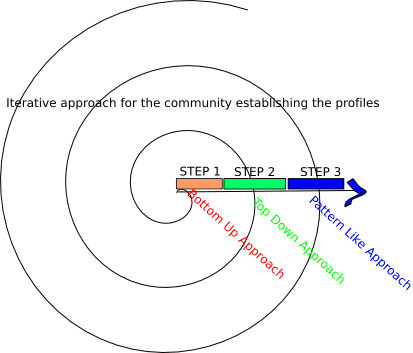
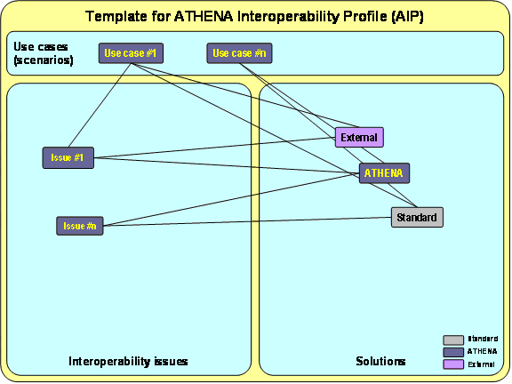
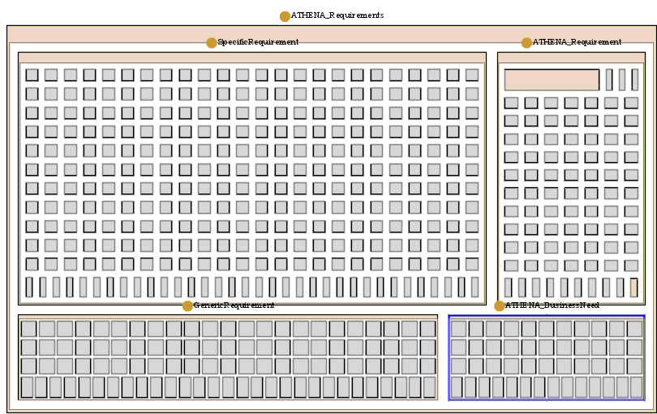
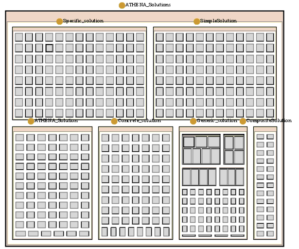
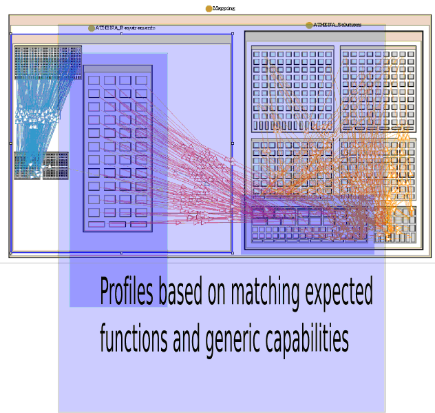

")

Guidelines for interoperability profiles
Procedure
The revised process followed within ATHENA is outlined in this section. An interoperability profile means a collection of ATHENA generic solutions that work together to solve a set of meaningful interoperability generic problems (interoperability issues). In addition, requirements were categorized using initial classification based on industrial sectors (e.g. Automotive, Aeronautic, Telecom or Furniture) and application domains (e.g. Product Development, Portfolio Management, Supply Chain Management or e-Procurement).
From the experience gained within ATHENA, in conjunction with some other standardisation initiatives, it appeared that a relevant approach to define profiles for interoperability of enterprise applications should be established through program iterations, and distinguishing three main phases or steps that are independent of iterations.
During the first step, a bottom-up approach for initialisation of profiles, in a second step a top-down approach for validation and improvement of profiles. As soon as the profiles are robust enough, the third step consists in a pattern-like approach allowing effective usage of knowledge gain during the two first steps to fasten identification and validation of relevant solutions for new business cases and scenarios. Robustness is related to maturity of technologies but also to maturity of the network in charge of the interoperability profiles and of its members.

The next figure illustrates the generic evolutionary model use within the program and that is probably followed by any initiative dealing with interoperability of enterprise applications.

The next figure illustrates the profile development steps in a generic way by a community involved in a program implying several iterations. See [ATHENA B4 2004] for more details on programs versus projects and their impact on interoperability.

Step 1 (bottom-up approach)
The four initial pilots performed interoperability problem analysis which resulted in business needs and interoperability issues. Since the ATHENA Knowledge Base was not available in the beginning some "ad-hoc" or "rules of thumbs" were used to pick the selected ATHENA generic solutions to use with related specific or ATHENA solutions. These results, given that they are successfully integrated and actually solve the interoperability issues of the pilot, defines an initial ATHENA Interoperability Profile (AIF) for the specific pilot based on:
- A matching sets of generic needs and generic solutions
- Business scenarios sets with similar set of generic needs and for which it is possible to use same set of generic solutions and corresponding concrete and specific solutions
Establishment of such sets is based on similarity/dissimilarity analysis proposed by the ATHENA B4 project.
Such an exercise is valuable only if based on inputs from experts on interoperability. In addition, to take advantage of already existing frameworks dealing with interoperability is particularly important due to in one hand limited resources of the ATHENA program, in the other hand to already existing robust and consensual solution components belonging to different framework for interoperability hosted by different organisation consortia. Some examples to consider are for example:
- Object Request Broker (ORB) based on OMG’s specification [OMG] and implemented through available commodities on the Web (e.g. Java JDK and JRE, open source ORBs like Orbit).
- LDAP implementing X500 standard [ISO 1993] and with numerous open source commodities (e.g. OpenLDAP).
- Workflow systems according WfMC standards [WfMC] (e.g. Enhydra Jawe and Shark, Bonita).
- Application servers based on CORBA Component Model [OMG 2006b] and Java Enterprise Edition [Sun], with existing solutions as well as commercial of the shelves (e.g. IBM WebSphere) and open source industrial platforms (e.g. JBoss).
- ISO STEP application protocols [ISO 1994] and tools supporting the standard (e.g. Dassault Systèmes’ CATIA and EPM Technologies’ Enterprise Data Manager).
- W3C Web services specifications [W3C 2004c] including OASIS’s BPEL [OASIS] and available implementations (e.g. ActiveBPEL).
Initialisation of interoperability profiles should be based on those that already exist. Within the ATHENA project, several frameworks of reference were used. For industrial users, OMG and ISO STEP frameworks and the way they are organised were considered as model of reference when establishing the description of work. In particular, the idea of similarity/dissimilarity is coming from the process related to elaborate application protocols, which are in a first step elaborated by a group of expert in a given field, and then mapped with already existing common resources for all the STEP application protocols.
It was possible to establish relationships through some bindings provided by user-oriented frameworks. Within the scope of ATHENA, it is important to point out that it was mandatory to be independent of any existing framework, and to be able to use existing and relevant frameworks simultaneously in a federated way. One important identified gap was existence of overlapping and incompatible standards. In addition, consideration of enterprise modelling, knowledge modelling and semantic mediation in order to address interoperability in a holistic way implied to extend already existing frameworks with new aspects not yet considered.
Step 2 (top-down approach)
Using the ATHENA Knowledge Base we can (semi-)automatically perform the requirements to solutions mapping method. This will generate new solutions that are possible candidates to be added to the initial profile for the pilots. Whether these solutions could be added or not must be validated by the solutions providers in combination with the pilot users.
New pilots can be compared to the previous pilots using the knowledge base. From the knowledge base it is possible to identify generic solutions and corresponding specific or ATHENA solutions that should correspond to the new pilots. If it appears that this is not the case after performing an evaluation, it implies that the sets of generic needs and specific needs and associated relevant contextualisation elements should be extended or improved in order to provide a more appropriate matching (following an iterative approach). This should be continued until a robust framework is obtained that can be applied for numerous different pilots.
Step 3 (pattern-like approach)
Rather than looking at individual pilot needs we group the issues into meaningful pieces of interoperability problems (that are applicable to different industry sectors and application domains) through the generalisation process defined in Dynamic Requirement Definition Process. Links between specific requirements and ATHENA requirements are tracked using a knowledge base. Then the already existing generic requirements → generic solutions → specific solutions mapping can be reused for identification of generic solution establishment and identification of existing interchangeable concrete and specific solutions.
This will generate "solution patterns" that are usable in different sectors/domains. Of course, as the ATHENA project considered a limited set of business scenarios with limited resources, obtaining robust “solution patterns” imply to continue, on the basis of the method established by ATHENA and starting from the existing knowledge base, to still perform several iterations within communities that will continue the process started within ATHENA. It could be done by the Enterprise Interoperability Centre (EIC) in collaboration with existing networked communities. It is for example targeted within the exploitation plan of some industrial partners (e.g. EADS CCR that will promote the approach and support its continuation within the EADS Group and within projects in the Aerospace and Manufacturing sectors).
Templates and supporting tools
During the ATHENA project, a basic template for interoperability profile was used, allowing formalising relationships between use cases and interoperability issues, and then relationships between issues and concrete solutions.

During the final piloting activities that were related to integration, it appeared that such a model should be improved for next iterations, in order to reflect independence of industrial projects and commercial software products development. Other issue was related to composition of solutions where each enterprise solution is a composite solution that aggregates several unitary solutions. An example is the Networked Collaborative Product Development (NCPD) platform that integrates model-generated collaborative workplace, semantic mediation, workflow interconnection, etc. Semantic mediation itself was sub-divided in mapping solution, transformation description solution and transformation execution solution. Finally, as each unitary solution component can be developed independently, without targeting initially any composition, it was important for the ATHENA Interoperability Framework to propose a set of generic solution components easy to integrate within the whole framework, and to select existing interchangeable specific concrete solutions provided by ATHENA or by any solution providers outside the ATHENA project.
This is why the ATHENA Knowledge Base (also referred to as the Harmonisation Model) in Protégé, initially developed within the context of ATHENA piloting activities for Aerospace and then shared with the other partners, proposes more sophisticated profiles based on the Dynamic Requirement Definition (DRD) process and experience gained from pilots within ATHENA. It provides formalisation of the previously described concepts in order to organize information captured during the project.
The ATHENA Knowledge Base contains the following information related to the problem space:
- Specific requirements extracted from business scenarios
- Generic requirements extracted from solution providers clients
- ATHENA requirements extracted from analysis within B4, that aimed to factorize common requirements related to similar interoperability issues
- ATHENA business needs extracted from abstraction of ATHENA requirements for elaboration of the ATHENA Interoperability Framework

The ATHENA Knowledge Base contains the following information related to the solution space:
- ATHENA solutions: Solutions, generic or concrete, simple or composite, and that were developed through ATHENA (i.e. using ATHENA resources).
- Generic solutions: A generic solution is a family of solutions, defined from a functional point of view by the community, and for which several concrete implementation may exist. The functional may be well formalised, for example by means of a standardised specification.
- Concrete solutions: Solutions that are corresponding to a given implementation of a generic solution, simple or composite.
- Simple solution: A simple solution is a unitary independent solution component that can be packaged, deployed and used alone.
- Composite solution: A composite solution is a solution that is obtained by composing several simple solutions.
- Specific solution: A solution component coming outside of the ATHENA project.

The interoperability profiles can be then established:
- matching expected generic functionalities (ATHENA business requirements) and generic abstract solutions, that will constitute after several iteration robust profiles for needs and solutions
- providing the mechanism for generalisation of specific requirements (abstraction defined in B4)
- providing mappings between generic solutions and concrete specific or ATHENA solutions (performed during integration in B5, with support of A4)
